Авторский надзор
От визуализации до реализации
Сравните замысел с готовым интерьером. Здесь собраны одни и те же помещения на разных этапах работы.
Сравнение
Один ракурс,
два этапа
Передвиньте разделитель, чтобы рассмотреть детали визуализации и фотографии.
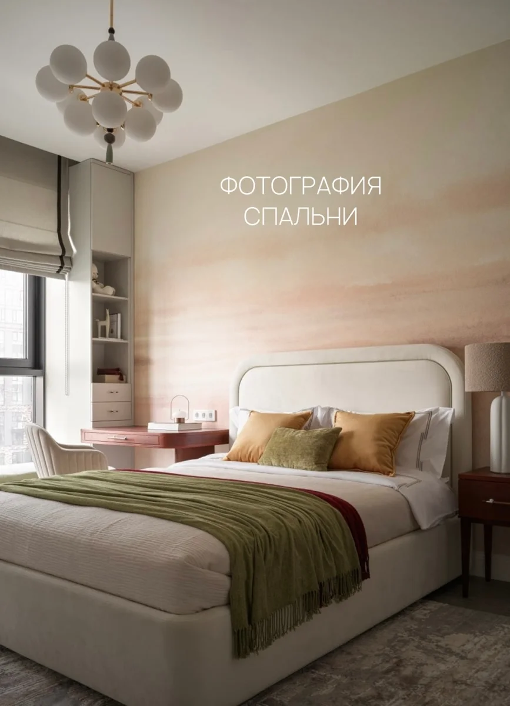
 ВизуализацияФотография
ВизуализацияФотография
Материалы студии
Все ракурсы
Откройте любой кадр для просмотра в полном размере. В серии санузла также доступны исходное состояние и коллаж-концепция.

Прихожая с филёнчатым шкафом

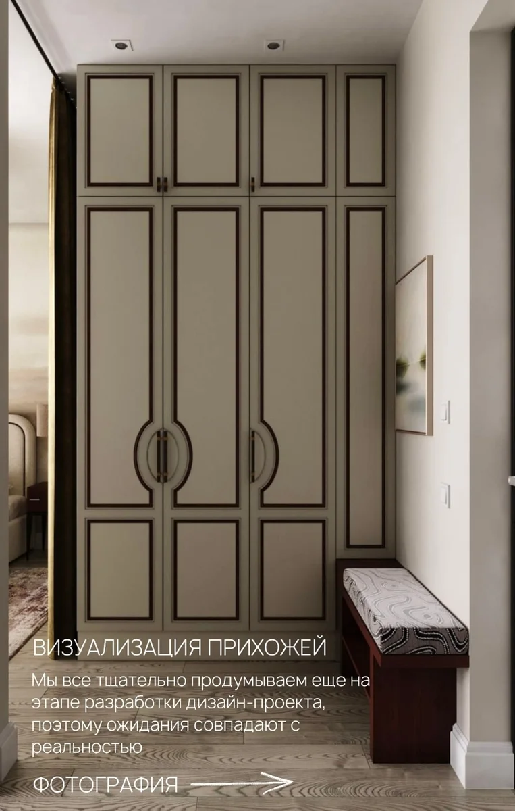

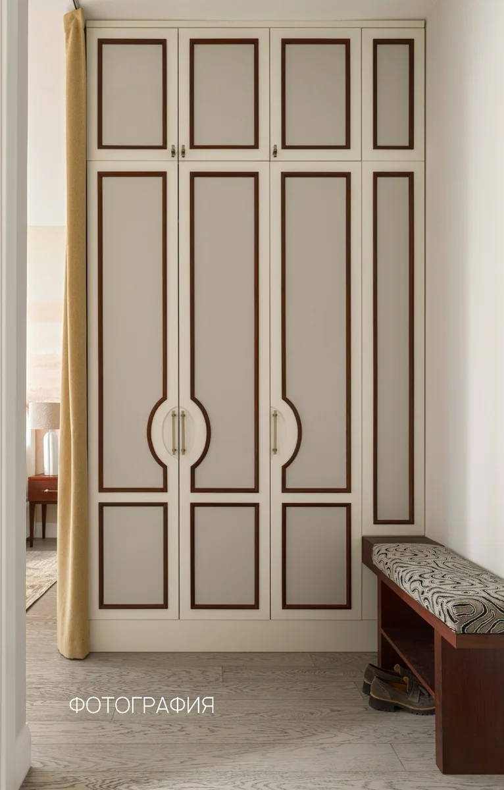
Санузел с сохранением отделки

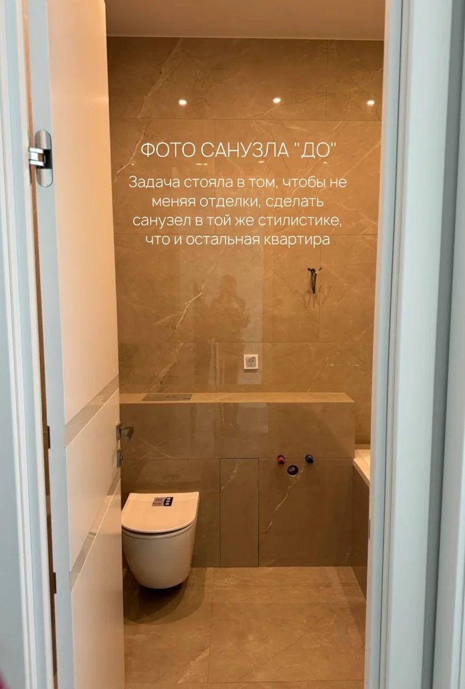

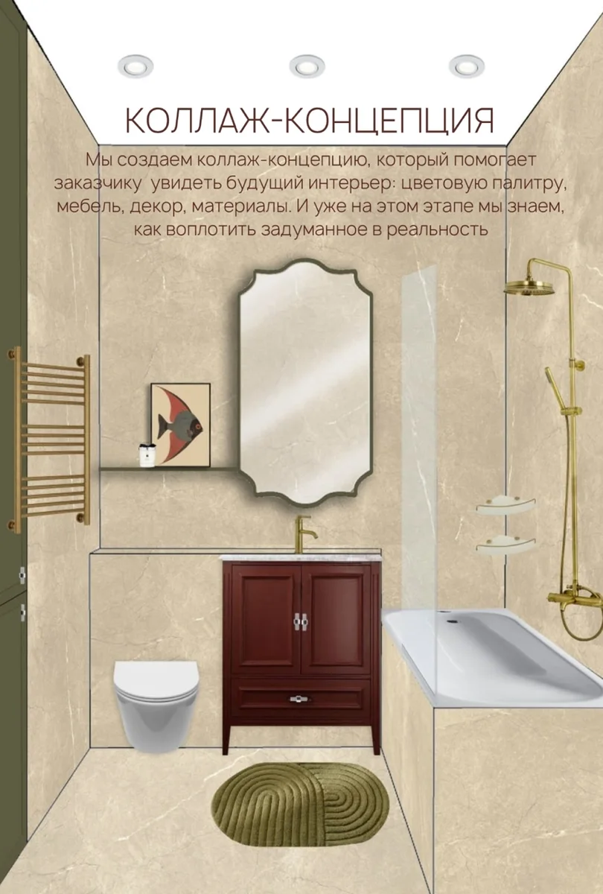

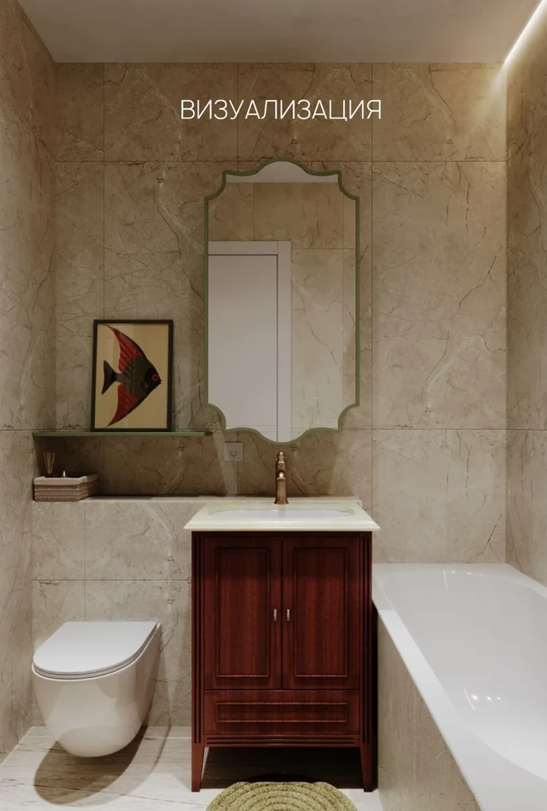

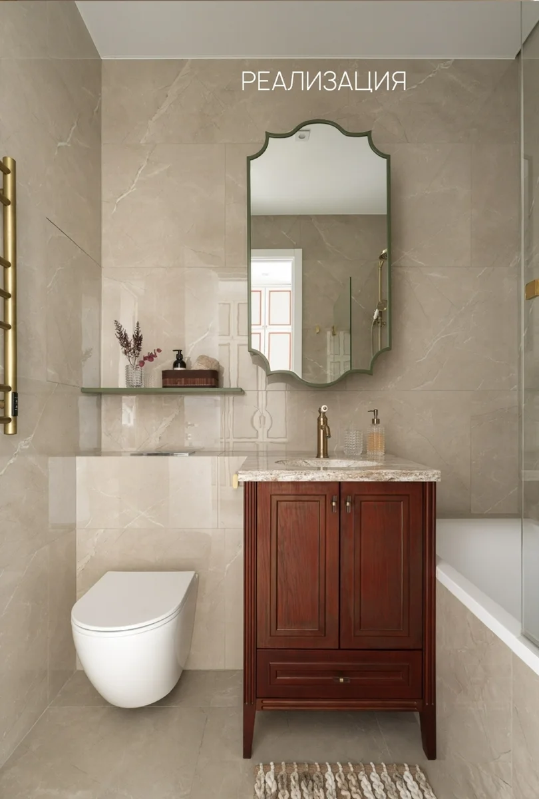
Кухня-столовая

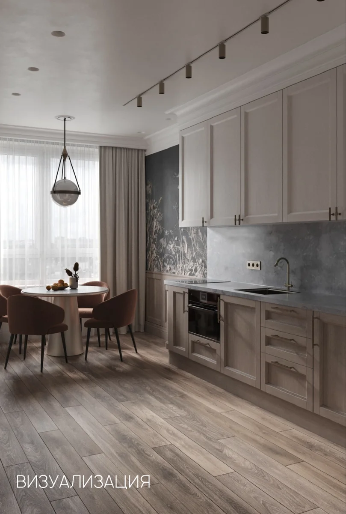

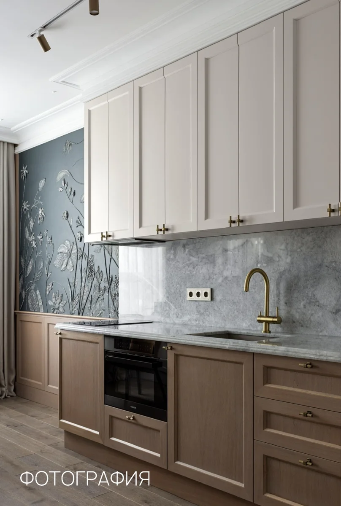
Кабинет у окна

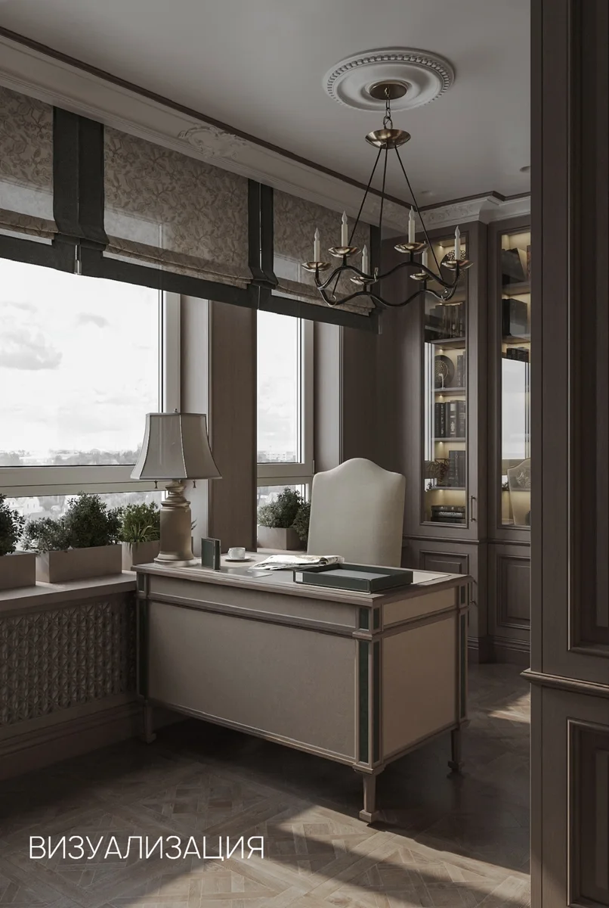

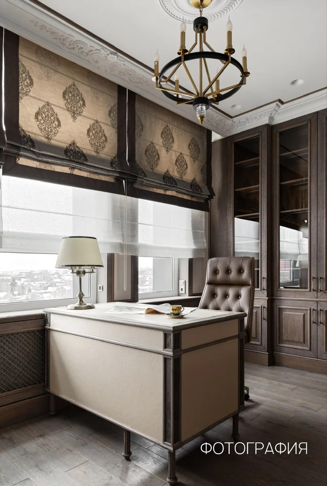
Спальня, вид к окну

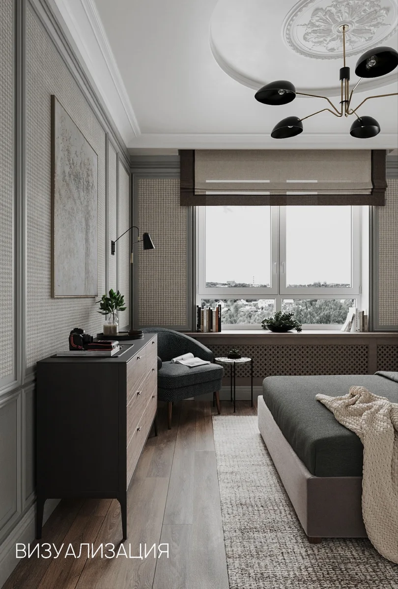

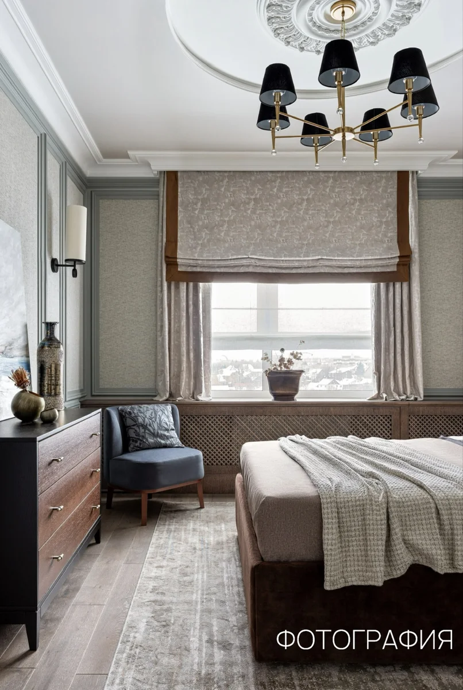
Изголовье и прикроватная тумба

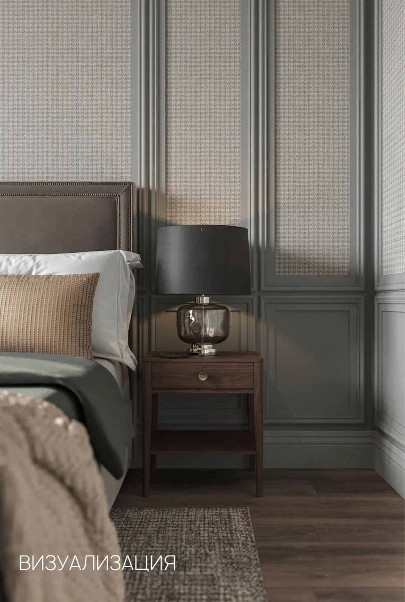

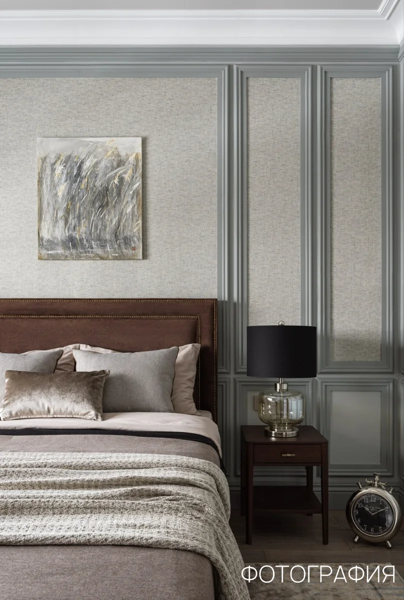